Keyif Havuz 1996'dan beri Bursa'da havuz yapıyor, periyodik bakımını üstleniyor ve havuz ekipmanı satıyor — otuz yıla yakın gerçek bir iş. Ama site üç işten hiçbirini net anlatmıyor, ve en kritik bulgu: menüdeki on ekipman sayfasının hepsi sıfır ürün gösteriyor, oysa site altında 74 ürünlük çalışan bir katalog duruyor. Bu, o reviewdan çıkan tasarım konsepti — henüz teklif aşamasında, yayına alınmadı.
Sorun estetikte değil — tipografi okunaklı, marka mavisi tutarlı, fotoğraflar gerçek işlerden. Sorun bilgi mimarisinde: menüdeki "Havuz Ekipmanları" altındaki 10 sayfanın hepsi WooCommerce kategori arşivi değil, hiç doldurulmamış WPBakery sayfaları. Gerçek 74 ürünlük katalog /urun-kategori/ altında çalışıyor ama sitenin hiçbir yerinden oraya link verilmiyor — mağaza ayakta, sadece ulaşılamıyor.
İkinci katman: her sayfa, içeriği ne olursa olsun ortalama 636 KB CSS+JS indiriyor — sıfır ürün gösteren kategori sayfası bile. Üçüncüsü bakımsızlık sinyalleri: tema demosundan kalma anlamsız %20/%80 ilerleme çubukları, yalnızca placeholder ile etiketlenmiş form alanları, "Copyright 2023" footer. Brief kendimce şuydu: markayı (mavi palet, mevcut logo, mevcut fotoğraf arşivi) koru; bilgi mimarisini, kart/buton dilini ve kod yükünü düzelt.
Sol taraf canlı keyifhavuz.com.tr'den, 3 Ekim 2026'da yakalandı. Sağ taraf deploy edilmemiş bir konsept — lokalde statik olarak servis ediliyor. Aynı sayfa, aynı 1512×945 viewport, aynı kırpma. Tutamacı sürükle.
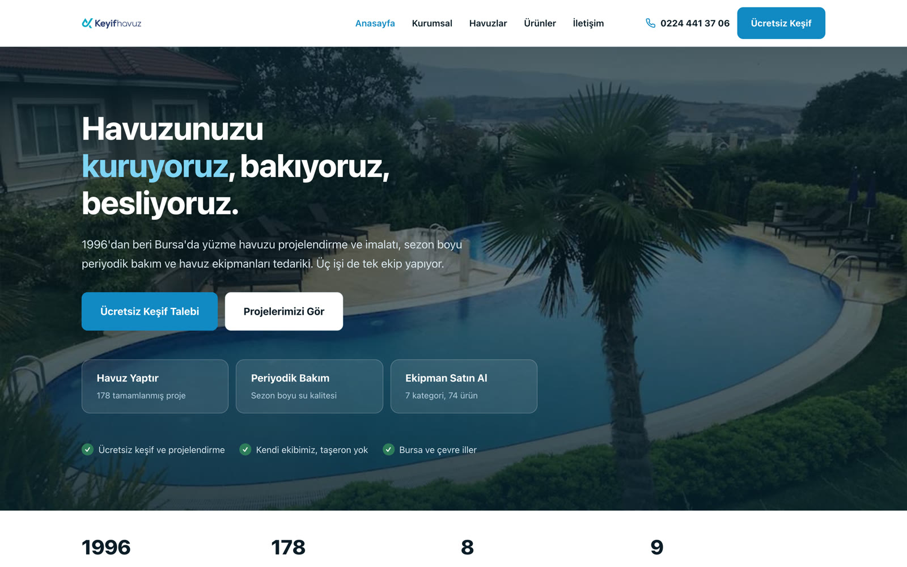
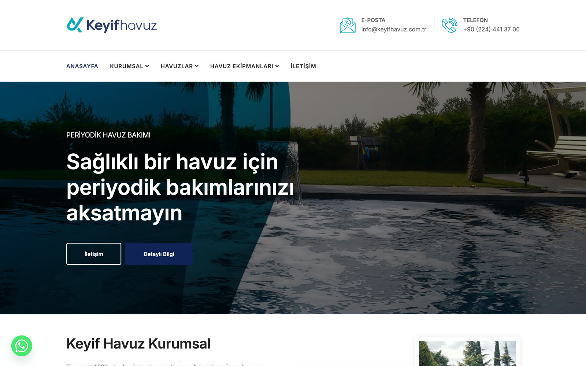
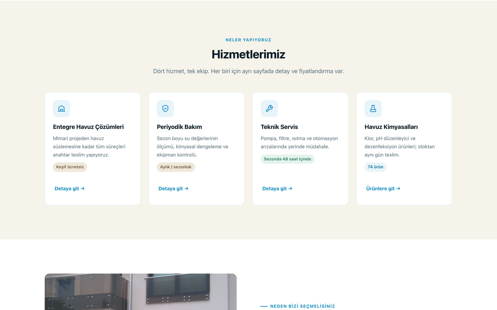
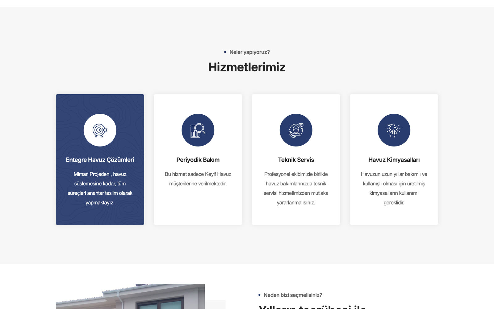
<a> içinde değildi, yani hiçbiri tıklanıp hedef sayfaya gitmiyordu. Rebuild dört kartı aynı anatomiye indiriyor, her birine gerçek bir hedef sayfa veriyor ve somut bir ikincil bilgi ekliyor ("74 ürün", "Sezonda 48 saat içinde").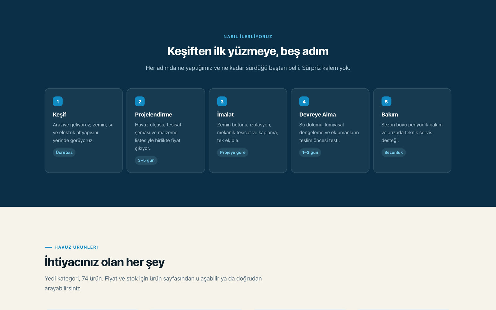
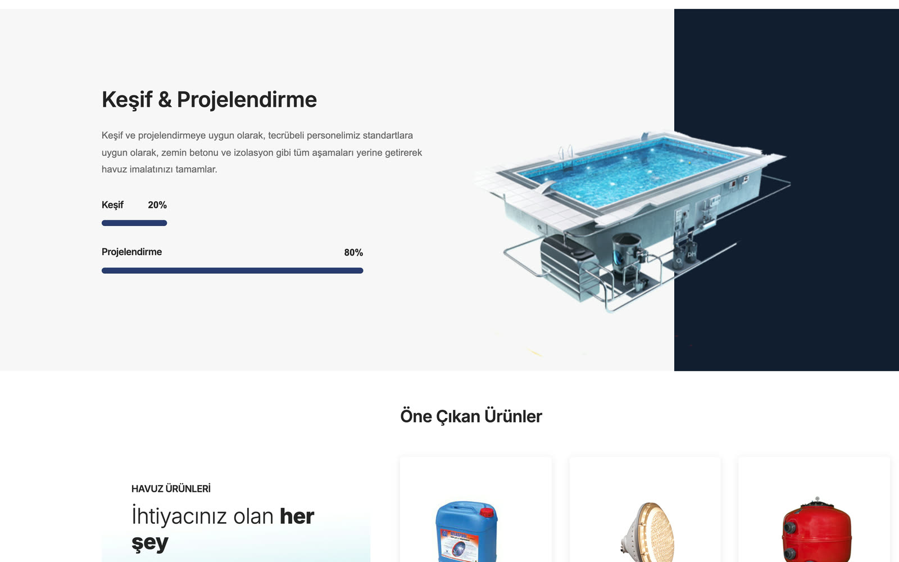
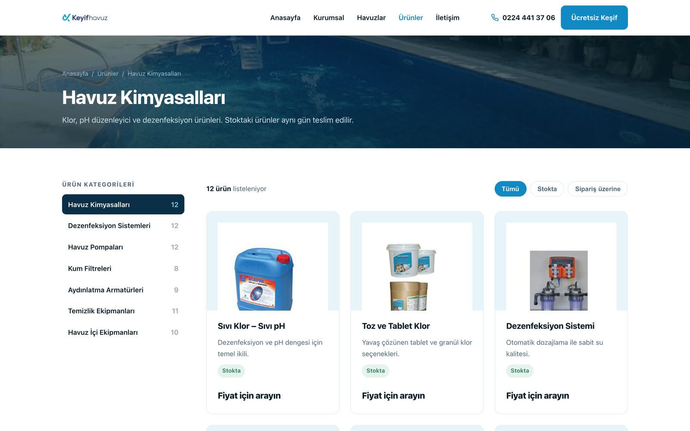
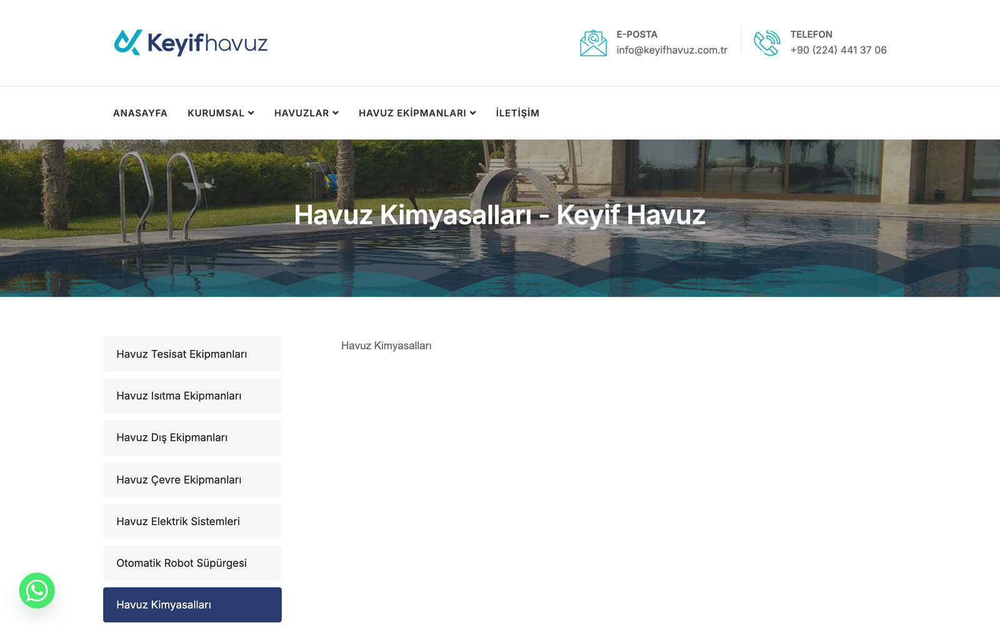
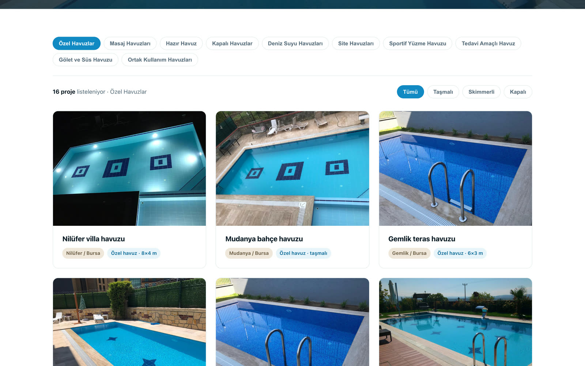
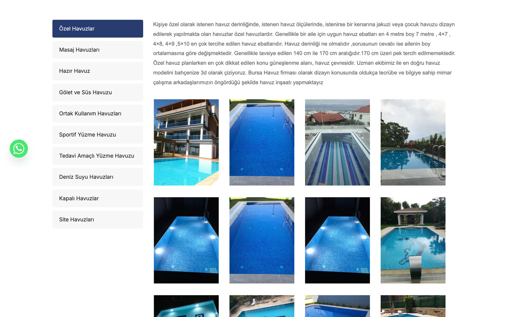
alt metni de yoktu. Bu, firmanın en güçlü varlığı olmasına rağmen bir "galeri"den öteye geçmiyordu. Rebuild her fotoğrafı ilçe, şehir, havuz tipi ve ölçü taşıyan bir proje kartına çeviriyor, tek 4:3 orana oturtuyor ve havuz tipine göre filtrelenebilir hale getiriyor.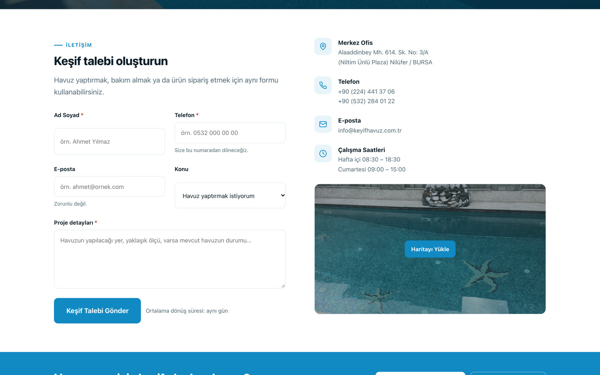
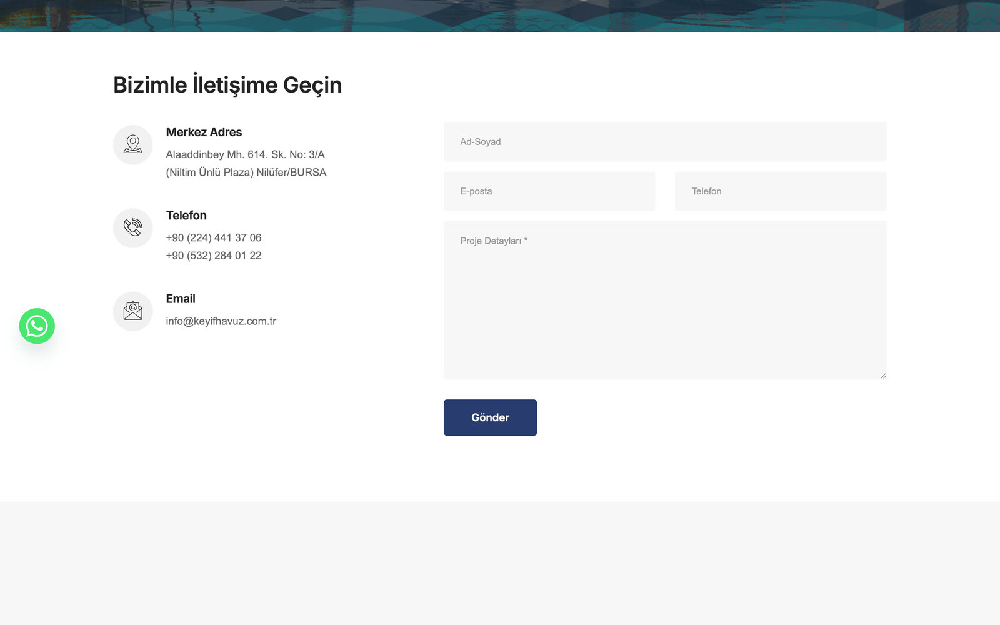
<label> yok, yazmaya başlayınca alanın ne istediği unutuluyordu — ve yalnızca "Proje Detayları" zorunlu işaretliydi; ad ve telefon değildi. Sayfa ayrıca 49 script ve 784 KB JS yüklüyordu, çoğu harita ve form eklentisinden. Rebuild görünür etiketler kullanıyor, ad ve telefonu zorunlu yapıyor, e-postayı opsiyonel bırakıyor, ve haritayı yalnızca tıklanınca yükleniyor hale getiriyor.Redesign mockup'tan (lokalde, python3 -m http.server) kaydedildi. Kesinti yok, hızlandırma yok. Mockup'ın arkasında gerçek bir backend olmadığı için "Haritayı Yükle" tıklanınca gerçek Google Haritalar yerine aynı statik görsel kalıyor — üretim entegrasyonunda gerçek harita yüklenecek.